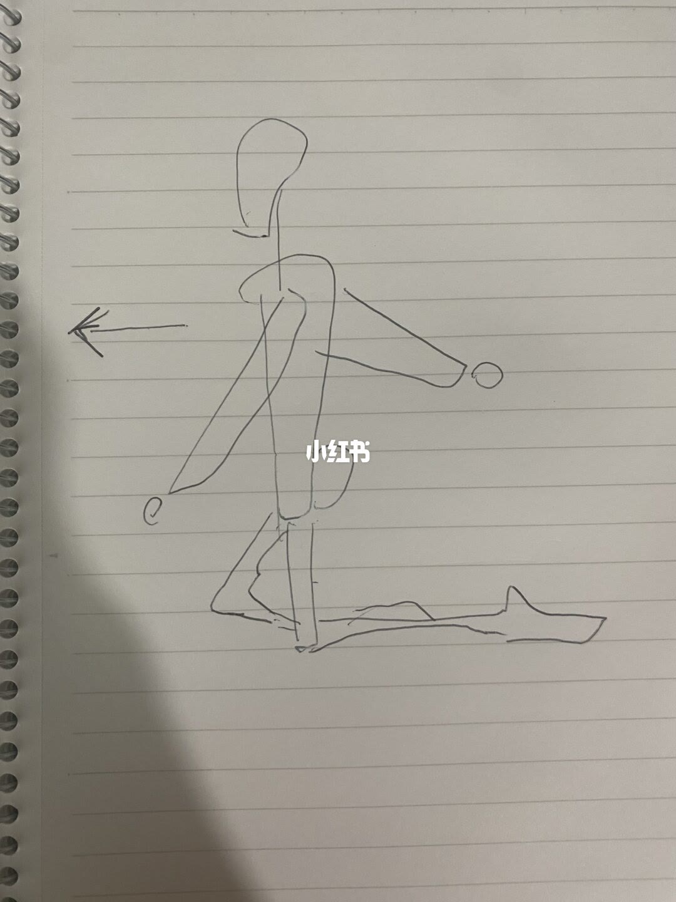
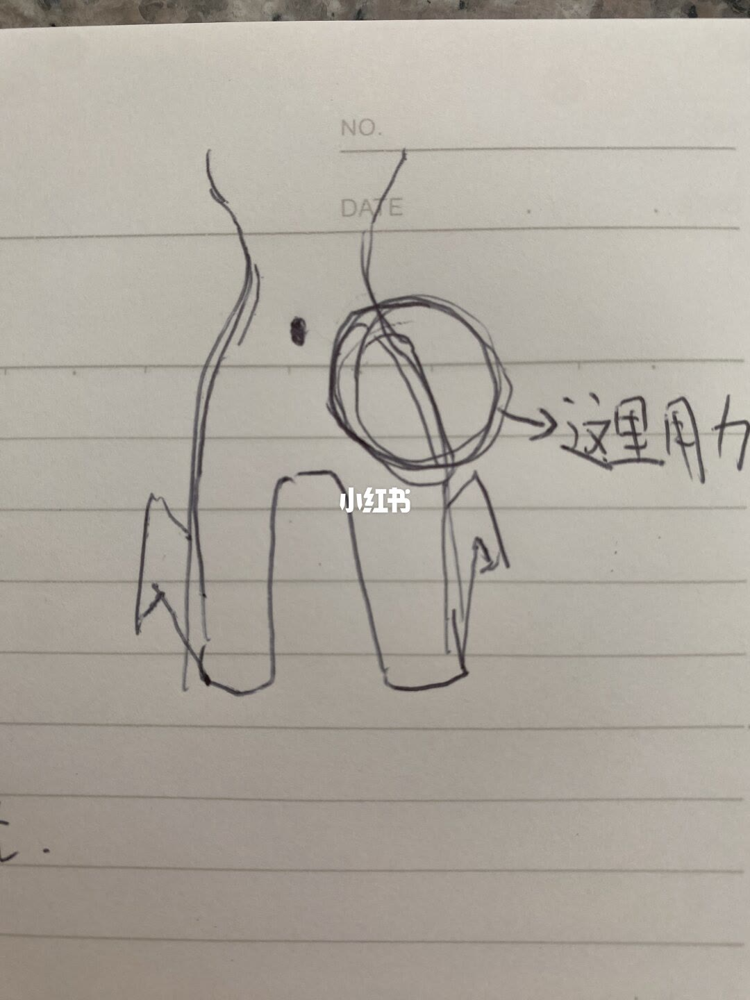

图文实录 · 小红书 · OrangeOrca
我悟了，关于用髋走路
两张图只画了朝左迈步，以及髋侧一圈旁边的「这里用力」；跪走找感觉和瘦腿，写在说明里，画面上没有。
1/2
侧视迈步，箭头朝左
横线笔记本，左侧能看见螺旋装订。一支笔画了朝左的侧视人形：头是圆，躯干是一条竖线，一臂向前、一臂向后，前腿屈膝迈出，后腿向后伸直，脚落在一条地面线上。胸前有一支朝左的箭头，表示行进方向。髋和腰没有文字，也没有圈出受力点。画面中央有小红书水印。没有步数、角度或次数。
说明写的是上床跪下、上身直立、跪着向前走，并描述腰髋两侧发酸、下腹核心和臀腿被带动。这一页画的是站立迈步，没有膝盖跪在床上的姿势。以图为准：这里只确认侧向迈步和朝左的方向。

2/2
髋侧画了圈：这里用力
同一类横线纸。纸头印着 NO. 和 DATE，后面是空的。画的是腰、髋到大腿上段：腰收进去，髋变宽，两条腿向下分开。躯干中部有一个实心圆点，图上没有标注它是什么。一侧髋的外缘用多圈线条圈住，箭头指向手写的「这里用力」。画面有小红书水印。纸的下缘还有没入画的笔画，无法确认写了什么。没有肌肉名称，没有次数。
说明二编写：用肚脐以下、大腿以上的一圈，尤其腰髋两侧；腰髋带动大腿，大腿不用主动发力。图上能对上的只有髋侧那一圈和「这里用力」。肚脐、大腿是否主动发力，画上没有字。

汇总
图只标了方向和髋侧
结论：这篇笔记在图上留下两件事。第 1 页是朝左的侧向迈步；第 2 页把用力点圈在一侧髋外，并写「这里用力」。
支撑就这两页。说明里的跪走两圈、腰髋酸、下腹核心、硬板床或瑜伽垫或护膝、膝伤不要试、不要长时间跪、腿部肌肉变瘦，都没有画出来。
边界：这是作者自己的找感觉笔记，不是走路或瘦腿的通则。图上没有证明跪走能让小腿变细，也没有安全时长。